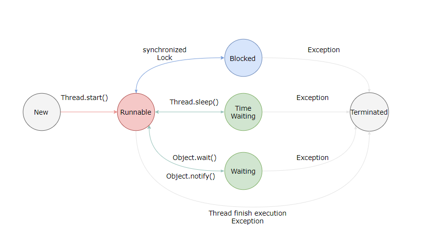

Java线程

线程状态转换

新建（New）
创建后尚未启动。
可运行（Runnable）
可能正在运行，也可能正在等待 CPU 时间片。
包含了操作系统线程状态中的 Running 和 Ready。
阻塞（Blocking）
等待获取一个排它锁，如果其线程释放了锁就会结束此状态。
无限期等待（Waiting）
等待其它线程显式地唤醒，否则不会被分配 CPU 时间片。
| 进入方法 | 退出方法 |
|---|---|
没有设置 Timeout 参数的 Object.wait() 方法 |
Object.notify() / Object.notifyAll() |
没有设置 Timeout 参数的 Thread.join() 方法 |
被调用的线程执行完毕 |
LockSupport.park() 方法 |
- |
限期等待（Timed Waiting）
无需等待其它线程显式地唤醒，在一定时间之后会被系统自动唤醒。
调用 Thread.sleep() 方法使线程进入限期等待状态时，常常用“使一个线程睡眠”进行描述。
调用 Object.wait() 方法使线程进入限期等待或者无限期等待时，常常用“挂起一个线程”进行描述。
睡眠和挂起是用来描述行为，而阻塞和等待用来描述状态。
阻塞和等待的区别在于，阻塞是被动的，它是在等待获取一个排它锁。而等待是主动的，通过调用 Thread.sleep() 和 Object.wait() 等方法进入。
| 进入方法 | 退出方法 |
|---|---|
Thread.sleep() 方法 |
时间结束 |
设置了 Timeout 参数的 Object.wait() 方法 |
时间结束 / Object.notify() / Object.notifyAll() |
设置了 Timeout 参数的 Thread.join() 方法 |
时间结束 / 被调用的线程执行完毕 |
LockSupport.parkNanos() 方法 |
- |
LockSupport.parkUntil() 方法 |
- |
死亡（Terminated）
可以是线程结束任务后自己结束，或者产生了异常而结束。
线程使用方式
- 实现
Runnable接口； - 实现
callable接口； - 继承
Thread类；
实现 Runnable 和 Callable 接口的类只能当做一个可以在线程中运行的任务，不是真正意义上的线程，因此最后还需要通过 Thread 来调用。可以说任务是通过线程驱动从而执行的。
实现 Runnable 接口
需要实现 run() 方法。
通过 Thread 调用 start() 方法来启动线程。
1 | public class MyRunnable implements Runnable { |
1 | public static void main(String[] args) { |
实现 callable 接口
与 Runnable 相比，Callable 可以有返回值，返回值通过 FutureTask 进行封装。
1 | public class MyCallable implements Callable<Integer> { |
1 | public static void main(String[] args) throws ExecutionException, InterruptedException { |
继承 Thread 类
同样也需要实现 run() 方法，因为 Thread 类也实现了 Runnable 接口。
当调用 start() 方法启动一个线程时，虚拟机会将该线程放入就绪队列中等待被调度，当一个线程调度时会执行该线程的 run() 方法。
1 | public class MyThread extends Thread { |
1 | public static void main(String[] args) { |
实现接口 VS 继承 Thread
实现接口要比继承 Thread 好一些，因为：
- Java 不支持多重继承，因此继承了
Thread类就无法继承其它类，但是可以实现多个接口； - 类可能只要求可执行就行，继承整个
Thread类开销过大。
基础线程机制
Executor
Executor 管理多个异步任务的执行，而无需程序员显示的管理线程周期。这里异步是指多个任务的执行互不干扰，不需要进行同步操作。
主要有三种 Executor：
CachedThreadPool: 一个任务创建一个线程；FixedThreadPool: 所有任务只能使用固定大小的线程；SingleThreadExecutor: 相当于大小为 1 的FixedThreadPool。
1 | public static void main(String[] args) { |
Daemon
守护线程是程序运行时在后台提供服务的线程，不属于程序中不可或缺的部分。当所有非守护线程结束时，程序也就终止，同时会杀死所有守护线程。
main() 属于非守护线程。
使用 setDaemon() 方法将一个线程设置成守护线程。
1 | public static void main(String[] args) { |
sleep()
Thread.sleep(millisec) 方法会休眠当前正在执行的线程，millisec 单位为毫秒。
sleep() 可能会抛出 InterruptedException，因为异常不能跨线程传回 main() 中，因此必须在本地进行处理。线程中抛出其他异常也需要在本地进行处理。
1 | public void run() { |
yield()
对静态方法 Thread.yield() 的调用声明了当前线程已经完成类生命周期中最重要的部分，可以切换给其他线程来执行。该方法只是对线程调度器的一个建议，而且也只是建议具有相同优先级的其他线程可以运行。
线程中断
一个线程执行完毕之后会自动结束，如果在运行过程中发生异常也会提前结束。
InterruptedException
通过调用一个线程的 interrupt() 来中断该线程，如果该线程处于阻塞、限期等待或者无限期等待状态，那么会抛出 InterruptedException，从而提前结束该线程。但是不能中断 I/O 阻塞和 synchronized 锁阻塞。
对于以下代码，在 main() 中启动一个线程之后再中断它，由于线程中调用了 Thread.sleep() 方法，因此会抛出一个 InterruptedException，从而提前结束线程，不执行之后的语句。
1 | public class InterruptExample { |
1 | public static void main(String[] args) throws InterruptedException { |
1 | Main run |
interrupted()
如果一个线程的 run() 方法执行一个无限循环，并且没有执行 sleep() 等会抛出 InterruptedException 的操作，那么调用线程的 interrupt() 方法就无法使线程提前结束。
但是调用 interrupt() 方法会设置线程的中断标记，此时调用 interrupted() 方法会返回 true。因此可以在循环体中使用 interrupted() 方法来判断线程是否处于中断状态，从而提前结束线程。
1 | public class InterruptExample { |
1 | public static void main(String[] args) throws InterruptedException { |
1 | Thread end |
Executor 的中断操作
调用 Executor 的 shutdown() 方法会等待线程都执行完毕之后再关闭，但是如果调用的是 shutdownNow() 方法，则相当于调用每个线程的 interrupt() 方法。
如果只想中断 Executor 中的一个线程，可以通过使用 submit() 方法来提交一个线程，它会返回一个 Future<?> 对象，通过调用该对象的 cancel(true) 方法就可以中断线程。
1 | Future<?> future = executorService.submit(() -> { |
线程互斥同步
Java 提供了两种锁机制来控制多个线程对共享资源的互斥访问，第一个是 JVM 实现的 synchronized，而另一个是 JDK 实现的 ReentrantLock。
synchronized
1.同步一个代码块
1 | public void func() { |
它只作用于同一个对象，如果调用两个对象上的同步代码块，就不会进行同步。
对于以下代码，使用 ExecutorService 执行了两个线程，由于调用的是同一个对象的同步代码块，因此这两个线程会进行同步，当一个线程进入同步代码块时，另一个线程就必须等待。
1 | public class SynchronizedExample { |
1 | public static void main(String[] args) { |
1 | 0 1 2 3 4 5 6 7 8 9 0 1 2 3 4 5 6 7 8 9 |
对于以下代码，两个线程调用了不同对象的同步代码块，因此这两个线程就不需要同步。从输出结果可以看出，两个线程交叉执行。
1 | public static void main(String[] args) { |
1 | 0 0 1 1 2 2 3 3 4 4 5 5 6 6 7 7 8 8 9 9 |
2.同步一个方法
1 | public synchronized void func () { |
它和同步一个代码块一样，作用于同一个对象。
3.同步一个类
1 | public void func() { |
作用于整个类，也就是说两个线程调用同一个类的不同对象上的这种同步语句，也会进行同步。
1 | public class SynchronizedExample { |
1 | public static void main(String[] args) { |
1 | 0 1 2 3 4 5 6 7 8 9 0 1 2 3 4 5 6 7 8 9 |
4.同步一个静态方法
1 | public synchronized static void fun() { |
作用于整个类。
ReentrantLock
ReentrantLock 是 java.util.concurrent(J.U.C)包中的锁。
1 | public class LockExample { |
1 | public static void main(String[] args) { |
1 | 0 1 2 3 4 5 6 7 8 9 0 1 2 3 4 5 6 7 8 9 |
比较
1.锁的实现
synchronized 是 JVM 实现的，而 ReentrantLock 是 JDK 实现的。
2.性能
新版本 Java 对 synchronized 进行了很多优化，例如自旋锁等，synchronized 与 ReentrantLock 大致相同。
3.等待可中断
当持有锁的线程长期不释放锁的时候，正在等待的线程可以选择放弃等待，改为处理其他事情。
ReentrantLock 可中断，而 synchronized 不行。
4.公平锁
公平锁是指多个线程在等待同一个锁时，必须按照申请锁的时间顺序来依次获得锁。
synchronized 中的锁是非公平的，ReentrantLock 默认情况下也是非公平的，但是也可以是公平的。
5.锁绑定多个条件
一个 ReentrantLock 可以同时绑定多个 Condition 对象。
使用选择
除非需要使用 ReentrantLock 的高级功能，否则优先使用 synchronized。这是因为 synchronized 是 JVM 实现的一种锁机制，JVM 原生地支持它，而 ReentrantLock 不是所有的 JDK 版本都支持。并且使用 synchronized 不用担心没有释放锁而导致死锁问题，因为 JVM 会确保锁的释放。
线程间协作
当多个线程可以一起工作去解决某个问题时，如果某些部分必须在其它部分之前完成，那么就需要对线程进行协调。
join()
在线程中调用另一个线程的 join() 方法，会将当前线程挂起，而不是忙等待，直到目标线程结束。
1 | public class JoinExample { |
1 | public static void main(String[] args) { |
1 | A |
wait() notify() notifyAll()
当调用 wait() 使得线程等待某个条件满足，
线程在等待时会挂起，当其他线程的运行使这个条件满足时，其他线程会调用 notify() 或者 notifyAll() 来唤醒挂起的线程。
它们都属于 Object 的一部分，而不属于 Thread。
只能用在同步方法或者同步控制块中使用，否则会在运行时抛出 IllegalMonitorStateExeception。
使用 wait() 挂起期间，线程会释放锁。这是因为，如果没有释放锁，那么其它线程就无法进入对象的同步方法或者同步控制块中，那么就无法执行 notify() 或者 notifyAll() 来唤醒挂起的线程，造成死锁。
1 | public class WaitNotifyExample { |
1 | public static void main(String[] args) { |
1 | before |
wait() 和 sleep() 的区别
wait()是Object的方法，而sleep()是Thread的静态方法；wait()会释放锁，sleep()不会。
await() signal() signalAll()
java.util.concurrent 类库中提供了 Condition 类来实现线程之间的协调，可以在 Condition 上调用 await() 方法使线程等待，其它线程调用 signal() 或 signalAll() 方法唤醒等待的线程。相比于 wait() 这种等待方式，await() 可以指定等待的条件，因此更加灵活。
使用 Lock 来获取一个 Condition 对象。
1 | public class AwaitSignalExample { |
1 | public static void main(String[] args) { |
1 | before |